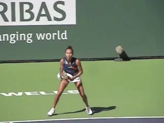
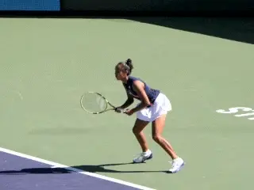
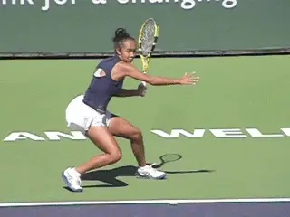
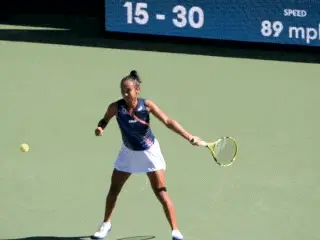
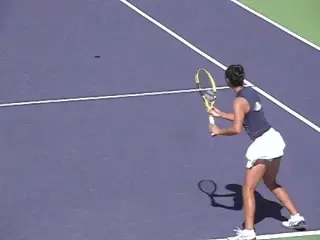
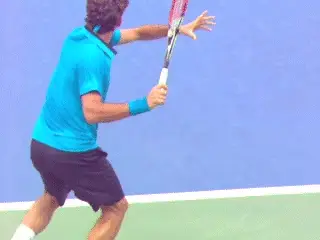

Leylah Fernandez Forehand¶
Analyzed by John Yandell

Leylah Fernandez's straight arm forehand.
Leylah Fernandez's forehand! Could it be any different from our study of Daniil Medvedev's last month? (Click Here.)
You might think Medvedev looks more WTA, and Leylay more ATP. That's how crazy and diversified strokes can be on the tour.
When we look at Leylah's forehand the first thing that is overwhelming obvious is that she hits with a straight arm. Really totally straight.
There are probably others but only other WTA player I have studied who has that straight arm is Ash Barty (Click Here.) So let's go through it element by element. Leylah is a lefty, but all the key points apply.
Grip
Leylah has a relatively mild semi-western grip. Her index knuckle is on bevel 4. Her heal pad though looks squarely on bevel 3, or aligned behind the racket face. It's probably close to Andre Agassi, slightly stronger that Roger Federer, but clearly less extreme than Nadal or Djokovic.

A strong unit turn and left arm stretch.
Unit Turn
Leylah has a great, strong unit turn. She slides her opposite hand up the throat of the racket. Then she keeps that hand on the throat until her racket is in the center of her torso.
Then she stretches her opposite arm all the way across so that it is parallel with the baseline and perpendicular to the sideline. Her shoulders turn somewhat beyond 90 degrees, with her chin over her front shoulder.
This is the classic pro body turn position, unless your name is Daniil Medvedev. At this point her racket is tilted slightly backwards, with the tip slightly above head level, and her elbow is bent and pointing in toward her waist.

Perfectly straight arm and great extension.
Straight Arm
She then extends her elbow and straightens her hitting arm. She maintains this position making contact with the arm perfectly straight.
This puts her contact well in front of her legs and torso. Again much further in front than Medvedev or for that matter any player with the more common double bend hitting arm shape.
The result is that her swing has incredible forward extension. On many balls her arm stays straight until her hand reaches about the center of her torso, and as her arm continues across to the edge of her torso, she still has probably a couple of feet of spacing.
Finishes
On many balls, she has a full wiper action in her forward swing, with the racket face turning over until the bottom edge is square with the court and pointing at the sideline. On others she hits flatter with little or no wiper action, but with similar extension. The exception is when she hits with a reverse finish, her racket finishing over her head.

A flat finish, a wiper finish, and a reverse finish.
Stances
In addition to the 3 typical pro finishes she also hits from all 3 typical stances. Predominately she hits semi-open. But she also hits fully open, and neutral, again like almost all pro players.
As with many other women players, she can also hit from what we can call a squatting stance, with a much lower contact point with her knees deeply bent and sometimes actually touching the court. Would like to hear subscriber views on this, but presumably this is to control the bounce height on hard hit, heavy balls.
But is it Type 3?
So is it the classic pro Type 3 forehand identified by the great Dr. Brian Gordon and modeled so perfectly by Roger Federer? (Click Here for his introduction to Leylah's forehand in the Interactive Forum.)

All 3 stances plus the squat.
Nope! If we look closely at her backswing, we can see that Leylah does appear to keep her racket hand mostly on the left, hitting side of her body.
But look at the relationship between her arm and her racket head. The Type 3 forehand turbo charges the hitting shoulder by placing the racket head to the outside of the hand with the face tilting somewhat downward. This creates the dynamic flip at the start of the forward swing.
Leylah doesn't do this. Instead she clearly moves her hand and racket to the inside before starting forward. This creates a compact inside loop. Compare this to Roger Federer.
It's is compact but that still this makes it a Type 2 forehand in this key respect. In his brilliant introduction to the Fernandez footage in the Interactive Forum, Brian explains this in more detail (Click Here.)
In a true Type 3 forehand there is also a sequencing in the forward torso rotation with the hips rotating slightly earlier than the shoulders. In Leylah's case the hips and shoulders appear to rotate forward in concert.
So does this negate all the other positive elements we've looked at above? No, it's just that, possibly or likely, the lack of the flip and the rotation sequence reduce the forward or horizontal racket speed.

Leylah has a compact backswing, but her racket and hand position still make it WTA compared to Federer.
Still the straight arm, the early contact, and the extension could also be creating more vertical racket speed. This means these elements could increase the spin component, although from watching Leylah it's obvious that her forehand is relatively flat.
We weren't really set up to film spin, but on a few examples that we could measure total spin was at about 1900rpms. That's not a high number at least compared to the men's game obviously.
But it's about the same as Andre Agassi and Pete Sampras in the 1990s. And not that far off Medvedev's 2100ish rpm average. (Click Here.) It's close to the top of the range of the women we measured in the late 90s. (Click Here.)
So as we said at the top of this article, it's a wide technical world out there! And it's great to see the range of options in the women's game as well as the men.

John Yandell is widely acknowledged as one of the leading videographers and students of the modern game of professional tennis. His high speed filming for Advanced Tennis and Tennisplayer have provided new visual resources that have changed the way the game is studied and understood by both players and coaches. He has done personal video analysis for hundreds of high level competitive players, including Justine Henin-Hardenne, Taylor Dent and John McEnroe, among others.
In addition to his role as Editor of Tennisplayer he is the author of the critically acclaimed book Visual Tennis. The John Yandell Tennis School is located in San Francisco, California.